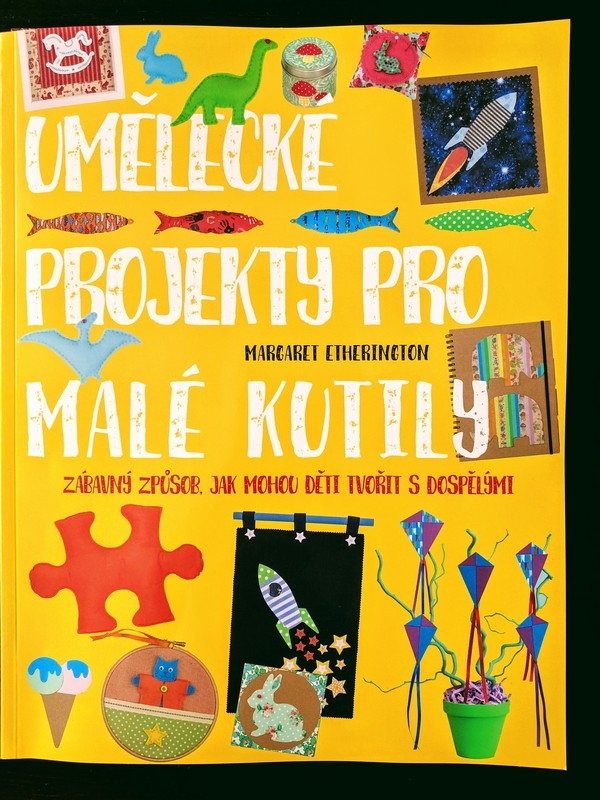

Vzpomínám si, že jako dítě jsem milovala tvoření všeho druhu. Bylo mi asi osm, když jsem k svátku dostala Velkou knihu pro malé mistry a naprosto mě uchvátila. Z “obyčejných” materiálů, které se většinou daly posbírat v domácnosti, se dalo vyrobit tolik báječných věcí od blahopřání k narozeninám až po loutkové divadlo! A když se nám narodil Oli, nemohla jsem se dočkat, až zase oživím kreativní rubriku tady na blogu a začnu něco tvořit společně s ním :-)
Proto mě také hned zaujala nabídka z knihkupectví Megaknihy.cz na zrecenzování knihy Umělecké projekty pro malé kutily. Pravda je, že na rozdíl od výše zmiňované Velké knihy pro malé mistry v této publikaci najdete složitější tvůrčí počiny (to slovo projekty zní možná trochu nadneseně, ale vlastně je v tomto případě poměrně výstižné), které dítě předškolního věku zcela jistě nezvládne a asi ho ani nebudou bavit. To ale nevnímám jako negativum - koneckonců hned v úvodu autorka zmiňuje, že projekty jsou určeny od prvňáčků až po středoškoláky.
Důvody, proč mě tato tvůrčí knížka příliš nezaujala, jsou jiné. Především mi trochu vadí, že tu není ponecháno víc prostoru dětské fantazii. Pro někoho to bude zcela jistě plus, že návody jsou velmi konkrétní, včetně toho, jakou barvu máte kam použít, ale já mám ráda trochu víc tvůrčí svobody :D Na druhou stranu je samozřejmě na vás, jak budete s knihou pracovat a jak moc přesně se budete návodu držet.
S tím souvisí i fakt, že projekty jsou na můj vkus někdy až moc složité, ledacos by se dalo udělat jednodušeji, byť za cenu toho, že výsledek nebude třeba úplně perfektní (ale to je přesně to, co mám na tvořivém procesu ráda). Ve většině případů také k výrobě potřebujete hodně materiálu či pomůcek, které se v domácnosti běžně nevyskytují (šicí stroj, magnetické lepicí pásky, samolepicí pěnová fólie…) a ani nevím, kde bych je sehnala. Není nad to, když se tady a teď rozhodnete, že si něco vyrobíte, posbíráte kolem sebe materiál a můžete hned začít, dokud vás drží ten tvůrčí zápal :-)
A v neposlední řadě - výsledné výrobky jsou sice hezké, ale nepřijdou mi nijak zvlášť originální (různé ozdobné krabičky, kapsáře, plechovky…). Málokterý z nich ve mně vzbudil nutkání, abych si něco takového vyrobila i já, i když výjimky se našly - třeba partu dinosaurů z plstěné látky asi nutně budu muset Olímu spíchnout :-) Zaujaly mě také nápady na zabalení dárků, které nejspíš také příležitostně vyzkouším. Plusem knihy je navíc příloha šablon, které při tvorbě rozhodně oceníte.

Ač se může zdát, že v dnešní době, kdy Instagram či Pinterest překypují mraky inspirace, je vydávání podobných kreativních knih už pasé, jsem ráda, že se v knihkupectvích stále tyto publikace objevují a podněcují v dětech chuť a touhu tvořit. Věřím, že i pro naše děti se chvilky strávené společným kreslením, kutěním a vyráběním stanou těmi okamžiky dětství, na které budou jednou rády vzpomínat.